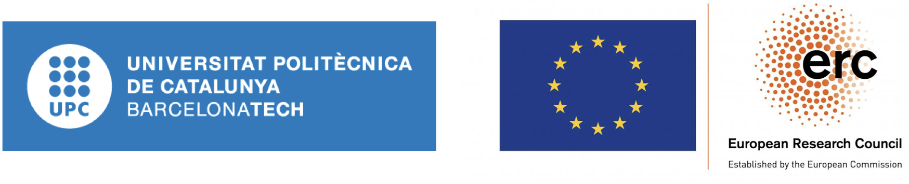

Interactive Machine Learning for Compositional Models of Natural Language
INTERACT is a 5-year research project funded by the European Research Council (ERC) and coordinated by Ariadna Quattoni. It runs from 2020 until 2025 within the Computer Science Department at the Technical University of Catalonia, Barcelona. The goal of INTERACT is to develop interactive machine learning algorithms for compositional models of natural language.
Project Description
Most Natural Language Understanding (NLU) applications have unique information needs. Large collections of annotated data are necessary to achieve good performance under the supervised learning approach. In INTERACT, we tackle this fundamental limitation by breaking the distinction between annotation and training and develop a collaborative training paradigm. We aim to empower the learner with the ability to generate samples and ask labels for any complete or partial structure in the domain. If the learning algorithm could ask the right questions, minimal human annotation would be needed. To achieve this we combine an optimal human feedback strategy with compositional latent-state models. We work under the framework of spectral learning of weighted automata and grammars and experiment with NLU tasks of increasing complexity, from sequence and tree classification to parsing problems where the outputs are trees.
